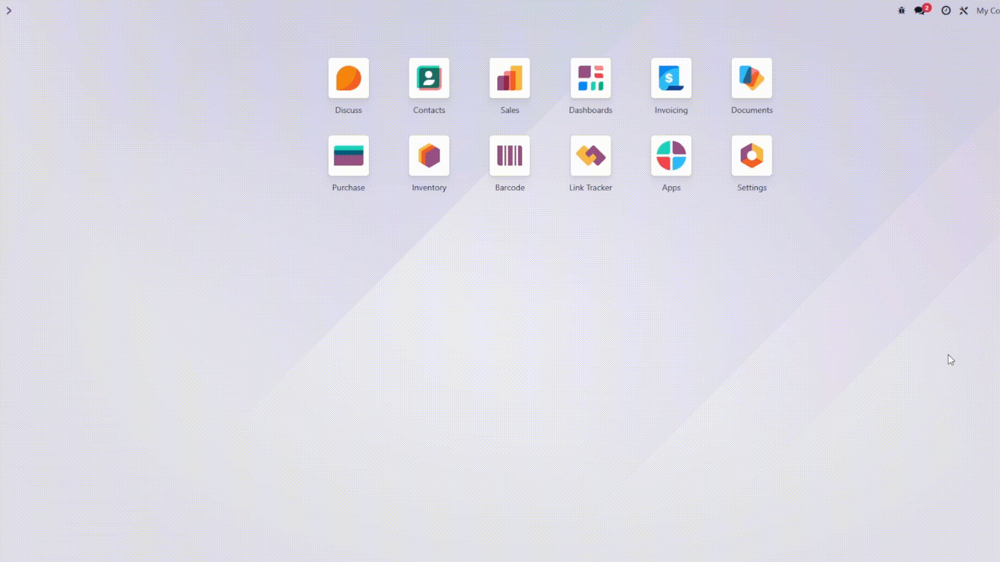

See how fast it is to convert a receipt to PDF
Storing scattered images (Receipts, ID Cards, Contracts) in JPG or PNG format creates clutter. Merging them into business workflows often requires downloading the file, using an online converter, and re-uploading it manually.
This module adds a native conversion tool directly inside Odoo Documents. Transform any image into a standard PDF with just a few clicks, keeping your workspace organized and professional.
Click on any PNG or JPEG file inside your Documents workspace.
Click the "Convert to PDF" button located in the top toolbar.
Choose if you want to replace the original or keep both, and click Convert.
Supports PNG and JPEG. Automatically handles transparency (RGBA) for perfect PDFs.
Replace Original: Great for fixing receipts.
Create Copy: Great for keeping raw assets.
Conversion happens locally on your server. No image data is sent to external APIs.
Developed with by Go On Associated